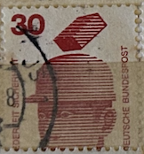
| SOURCE | TITLE| IMAGE MATCH | click to source page |
| MA-Shops | Bund Plattenfehler 698 I gestempelt MiNr. 698 I gestempelt | MA-Shops |  |
| eBay | Bundle W 55 stamped, Mi. 5.50 | eBay |  |
| Dreamstime.com | Vintage Postage Stamps of Deutsches Reich Editorial Stock Image - Image of closeup, name: 21570549 | 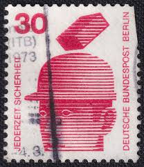 |
| Dreamstime.com | 02 09 2020 Divnoe Stavropol Territory Russia the Postage Stamp Germany West Berlin 1971 Information about Accidents Hard Hat Brick Editorial Stock Image - Image of head, accident: 192755464 | 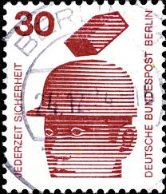 |
| iStock | German Postage Stamp Stock Photo - Download Image Now - Antique, Black Background, Black Color - iStock |  |
| ebid.net | GERMANY, Protective helmet, red 1971, 30pff, #4 on eBid United States | 221305431 | 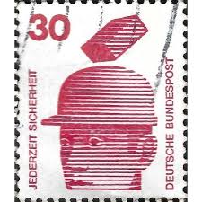 |
| iStock | German Postage Stamp Stock Photo - Download Image Now - Antique, Black Background, Black Color - iStock | 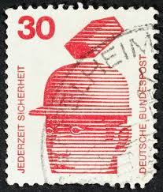 |
| Alamy | Postage stamp from the Federal Republic of Germany in the Prevent accidents series issued in 1972 Stock Photo - Alamy | 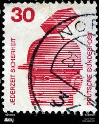 |
| Shutterstock | 2+ Thousand Deutsche Bundespost Royalty-Free Images, Stock Photos & Pictures | Shutterstock | 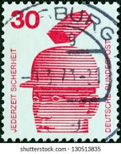 |
| Alamy | Stamp printed in Germany dedicated to 400 years of the Heidelberg Catechism, containing the doctrine of the reformed church, circa 1963 Stock Photo - Alamy | 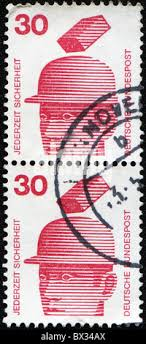 |
| Dreamstime.com | A Brick Falls on a Man Wearing a Hard Hat on a 1972 Germany Vintage Postage Stamp. Editorial Stock Photo - Image of retro, hobby: 387616603 | 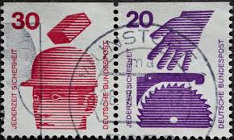 |
| eBay | Germany 1974 MiNr. W53 Accident prevention USED VF | eBay |  |
| eBay | Germany (FRG) K11 mint/MNH 1972 Accident prevention | eBay | 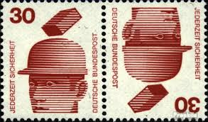 |
| Amazon.com | Amazon.com: FRD (FR.Germany) W56 unmounted Mint/Never hinged ** MNH 1974 Accident Prevention (Stamps for Collectors) : Toys & Games | 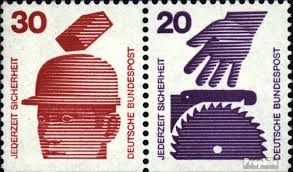 |
| eBay | Germany Scott #1078/1078 VF MNH 1974 Michel Zusammendrucke K11 | eBay | 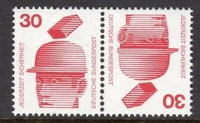 |
| eBay | BERLIN Zusammendrucke Michel: W51, W52, W55, W56, W59, W60, USED Lot24 Cat €54 | eBay | 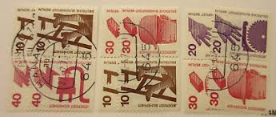 |
| Find Your Stamps Value | Value of postage revenge stamps | 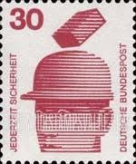 |
| Find Your Stamps Value | Value of jederzeit sicherheit deutsche bundespost 100 stamps | 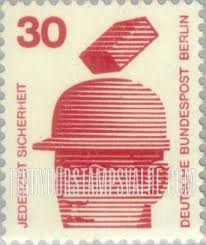 |
| Shutterstock | Germany Circa 1972 Stamp Printed Germany Stock Photo 100504861 | Shutterstock | 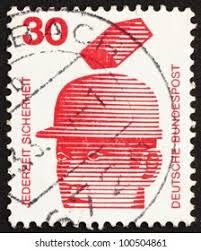 |
| Dreamstime.com | 1,280 Helmet Stamp Stock Photos - Free & Royalty-Free Stock Photos from Dreamstime | 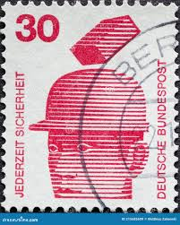 |
| HipStamp | Germany Berlin Scott # 9N320, 9N318, mint nh, se-tenant, Mi # W60 | Europe - Germany & Colonies - Berlin, General Issue Stamp / HipStamp | 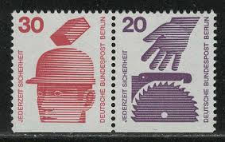 |
| eBay | Germany 1974 MiNr. W50 Accident prevention USED VF | eBay |  |
| eBay | BERLIN Zusammendrucke Michel: W57, W58, USED Lot24 Cat €24 | eBay |  |
| iStock | First Telephone Call Postal Stamp Stock Photo - Download Image Now - Postage Stamp, UK, Alexander Graham Bell - iStock | 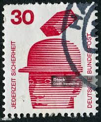 |
| iStock | Canceled West Germany Postage Stamp Ornate Traditional Mailboxes Bundespost Stock Photo - Download Image Now - iStock | 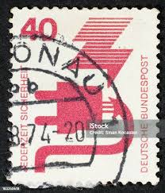 |
| Poppe Stamps | Poppe Stamps: German Federal Republic, 1971, 1604, Heavy Equipment, Workers - stamps for sale by theme and country | 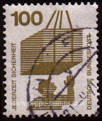 |
| iStock | Rwanda Postage Stamp Syncon Satellite 100 Years International Telecommunications Union Stock Photo - Download Image Now - iStock |  |
| eBay | German Stamps 1981-1990 Year of Issue for sale | eBay | 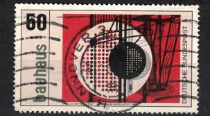 |
| Find Your Stamps Value | Value of jederzeit sicherheit deutsche bundespost 10 stamps | 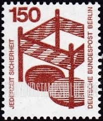 |
| eBay | 1974, Bundesrepublik Deutschland, HBl. 25, gest. - 1613250 | eBay |  |
| Amazon.de | Prophila Collection BRD (BR.Deutschland) W29 1972 Accident Prevention (Stamps for Collectors): Amazon.de: Toys | 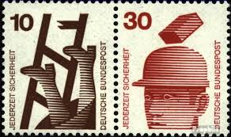 |
| eBay | Germany Scott #1075/1078 VF MNH 1974 Michel Zusammendrucke W29 | eBay | 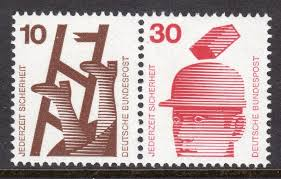 |
| eBay | BERLIN Zusammendrucke Michel: W51, W52, W59, W60, MNH, Lot24 Cat €28 | eBay | 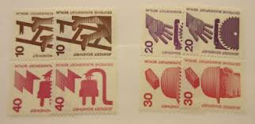 |
| Alamy | Stamp printed in Germany, shows symbol of the Red Cross in a stylized wind rose, circa 1953 Stock Photo - Alamy |  |
| Dreamstime.com | 19,704 Germany Text Stock Photos - Free & Royalty-Free Stock Photos from Dreamstime - Page 9 | 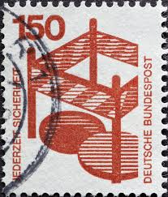 |
| Poppe Stamps | Poppe Stamps: German Federal Republic, 1971, 1596, Fire - stamps for sale by theme and country | 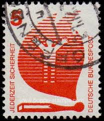 |
| eBay | Bundle W 47, W 48, stamped, Mi. 9,- | eBay | 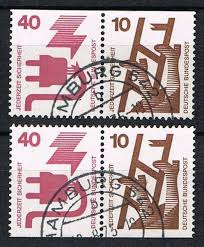 |
| Shutterstock | Karnal Haryana India- September 23rd 2024- Stock Photo 2521179929 | Shutterstock | 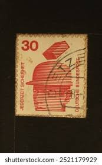 |
| eBay UK | Germany 1971-74 #1074-85 Accident Prevention (Set of 11) - MNH | eBay UK | 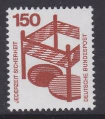 |
| eBay | GERMANY Mi. #MH 20e mint MNH stamp booklet! CV $21.50 | eBay |  |
| Shutterstock | December 6 2025 Jakarta Indonesia Postage Stock Photo 2721643977 | Shutterstock | 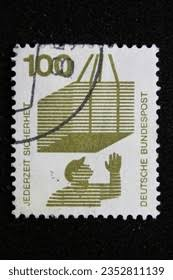 |
| allnumis.com | 5 Pfennig - Man Within Flame, and Spent Match (Fire Prevention), Miscellaneous - Germany - Stamp - 49732 | 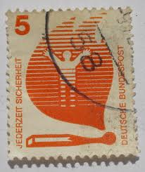 |
| eBay | GERMANY Mi. #MH 20c II mZ rare mint MNH stamp booklet! CV $825.00 | eBay | 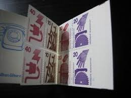 |
| eBay | Germany 1974 MiNr. W49/50 Accident prevention USED VF | eBay | 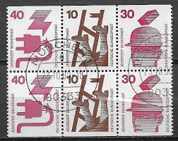 |
| eBay | West Germany - 1971 - Information About Accidents - 150Pfg - Used - #11 | eBay | 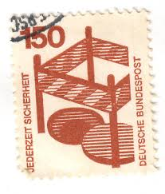 |
| eBay | Germany Scott #1074/1077/1078 VF Cancelled 1974 Michel Zusammendrucke W44 | eBay | 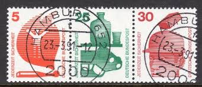 |
| eBay | GERMANY Mi. #MH 20d mint MNH stamp booklet! CV $21.50 | eBay | 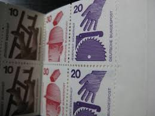 |
| Shutterstock | Ankara Turkey- 04052021 Used Stamps Germany Stock Photo 1949806315 | Shutterstock | 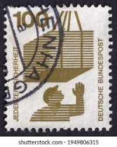 |
| Todocolección | sello aleman, rheinland pfalz, 3 pf. 1945, nue - Buy Antique stamps of Germany on todocoleccion | 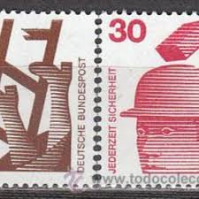 |
| Dreamstime.com | Barrier, Prevent Accidents Serie, Circa 1972 Editorial Stock Image - Image of envelope, federal: 142568009 | 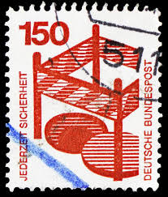 |
| eBay | Germany - 1971 Information About Accidents 10, 40, 100 Pfennig | eBay | 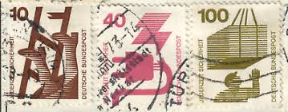 |
| Dreamstime.com | Vintage US Postage Stamp of President Lincoln Editorial Stock Image - Image of postcard, america: 85362819 | 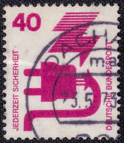 |
| eBay | 1971-1973..GERMAN Stamps.. 'Accident Prevention'..# 9N316-9N325..MNH..61 stamps. | eBay | 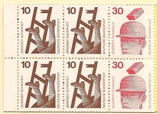 |
| eBay | Berlin 411 R A Gnr, mint, Mi. 13,- | eBay | 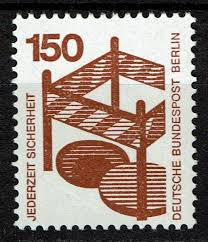 |
| New collection additions : r/stamps | 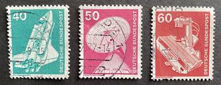 | |
| eBay | GERMANY BUND COLLECTION 1971/74 MH / MHB - 0/** VF | eBay | 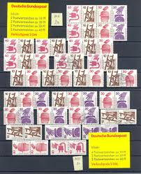 |
| eBay | Germany 1972 MNH Mi 703 A Sc 1085 Accident prevention. Fenced-in open manhole ** | eBay | 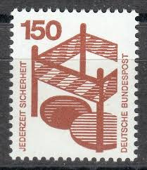 |
| eBay | BERLIN Zusammendrucke Michel: W46, W48, W50, W49, W47, USED, Lot24, €17.40 | eBay | 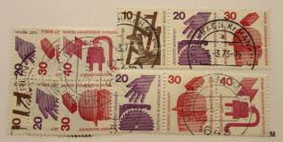 |
| Sparebeauty (sparebeauty) – Profile | Pinterest | 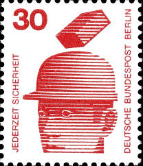 |